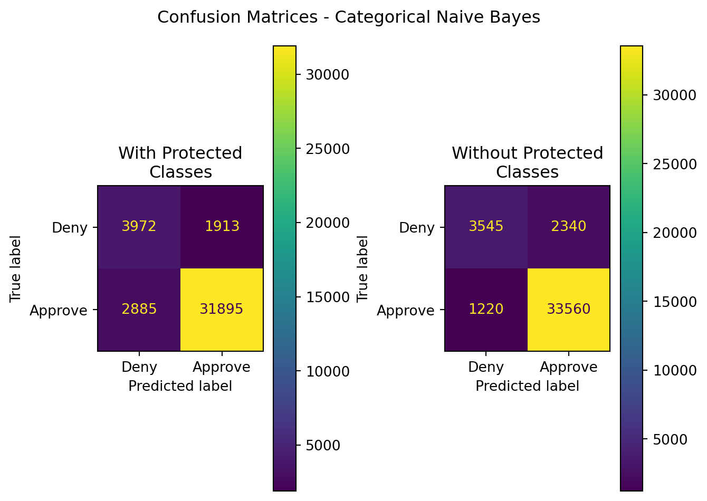
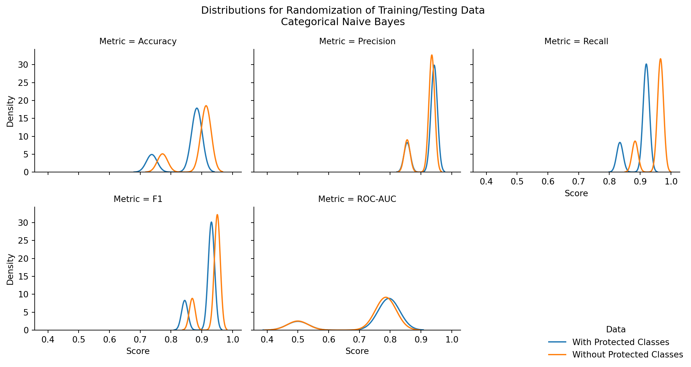
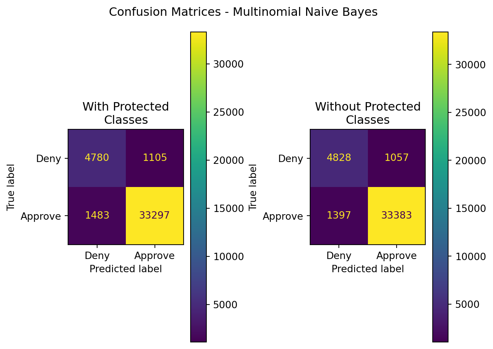
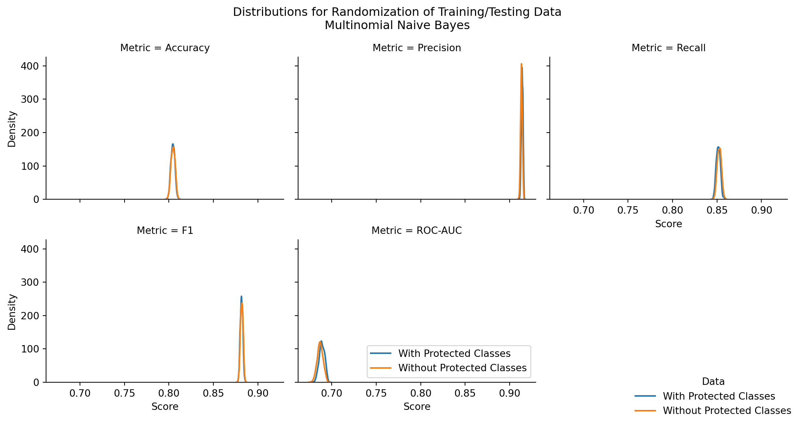
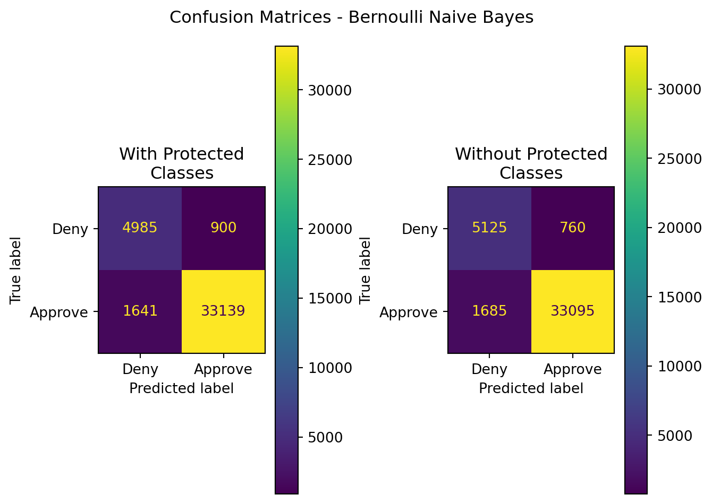
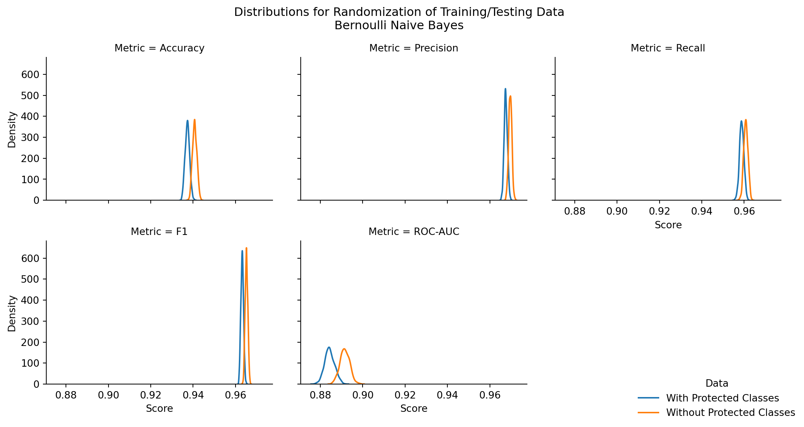

| class | size | cost | tested |
|---|---|---|---|
| R | S | low | False |
| R | S | low | False |
| R | S | high | False |
| R | M | free | False |
| R | M | low | False |
| R | L | free | True |
| R | L | high | False |
| R | M | free | False |
| R | S | free | False |
| R | S | free | False |
7 Naive Bayes
7.1 Overview
The Naive Bayes method of classification provides a fairly simple and accessible framework under which to estimate the probability that a subject is a member of a certain class, given prior evidence within one’s dataset. The methodology is commonly used in recommendation systems (e.g. streaming services, online gaming services, e-commerce, and many more) to quickly identify and suggest new actions, items, or activity to a user based on their past actions or activity.
The simplicity of the algorithm makes it an excellent candidate for assessing categorical data (in the case of multinomial Naive Bayes), as well as normally-distributed numerical data (for Gaussian Naive Bayes), and Bernoulli distributed or binary data (as for Bernoulli Naive Bayes). The assumptions made in the algorithm render it simple to implement, and to produce models with a reliable degree of performance.
7.1.1 What makes it Naive?
The following equations outline different formulations of Bayes’ Rule. In these formulations, let X represent the Data, and Y represent the Outcome or Label for the data.
\[ P(X|Y) = \frac{P(Y|X)\cdot P(X)}{P(Y)} \tag{7.1}\]
\[ P(X|Y) = \frac{P(X\cap Y)}{P(Y)} \tag{7.2}\]
\[ P(Y|X) = \frac{P(X|Y)\cdot P(X)}{P(Y)} \tag{7.3}\]
\[ P(Y|X) = \frac{P(X\cap Y)}{P(X)} \tag{7.4}\]
Bayes’ rule has no stipulation that X and Y be independent from one another in the source data. The requirement is that the input probability for \(P(X)\), \(P(Y)\), and \(P(X\cap Y)\) be the actual probability for each variable or combination thereof.
The algorithm is Naive because it assumes all features or input variables are independent of one another, or that each features’ probability does not directly impact one another. In this assumption, it means one can leverage the probability rule for independence between two variables:
\[ P(X\cap Y) = P(X)\cdot P(Y)\iff \text{X,Y are independent} \tag{7.5}\]
In the world of statistics, it can be quite rare to encounter a collected dataset in which all features are truly independent of one another.
Many novice, introductory statistics students sometimes make the assumption that variables are independent while working out problems in their homeworks, quizzes, or exams. This leads to incorrect responses, but makes the problem doable in relatively short order. In doing so, those students demonstrate their naivety. Since it makes the same assumption and performs no work to confirm or refute the claim, Naive Bayes is similarly naive.
This allows for the transformation of Equation 7.3, Equation 7.4, and Equation 7.5 to calculate probabilites when fitting data to a model and predicting the class of a new record:
\[ P(Y|X) = \frac{P(X_1|Y)\cdot P(X_2|Y)\cdot ...\cdot P(X_n|Y)}{P(Y)} \tag{7.6}\]
\[ P(Y|X) = \frac{P(X_1\cap Y)\cdot P(X_2 \cap Y)\cdot ...\cdot P(X_n\cap Y)}{P(Y)} \tag{7.7}\]
\[ P(Y|X) = \frac{\prod\limits_{i=1}^n P(X_i\cap Y)}{P(X)} \tag{7.8}\]
In Equation 7.8, one can see that the probability of belonging to a certain class, given an input record, is the product of the probabilities of each individual feature holding the same category for \(X_j\) when the class is \(Y\).
Because of the product formulation in Equation 7.8 above, it can be benefical to represent the equation using logarithms, rendering a simpler and more easily calculated implementation:
\[ \text{log}(P(Y|X)) = \frac{\text{log}\sum\limits_{i=1}^n P(X_i\cap Y)}{P(X)} \tag{7.9}\]
7.1.2 How does it work?
In short, prior probabilities are calculated as follows from a training dataset:
\[ P(X|Y) = \frac{P(X\cap Y)}{P(Y)} \]
The above is calculated for all features \(X_i\) in \(X\).
From there, these probabilities are applied in Equation 7.8 for every possible class outcome \(y_i\). The maximum amongst these probabilites is selected as the predicted class.
A simple way to understand Naive Bayes is as a calculation of the combined relative frequency for all features or variables in consideration when records belong to a specific class. These relative frequencies are treated as overall probabities, and are pre-calculated for a Naive Bayes model using a training dataset. When new records are introduced to the model for classification, Naive Bayes outputs the class that has the greatest probability using the pre-computed prior probabilites in conjunction with the new records’ feature data.
Consider the below example:
For this example, a dummy dataset is generated with 400 records. There are 4 classifications - R, G, Y, and B. There are 3 features for evaluation:
size, which takes on possible values of “S”, “M”, or “L”
cost, which takes on possible values of “free”,“low”,‘medium’, or ‘high’
tested, which is a boolean - True/False value
Below are the first 10 records of this dummy dataset:
To produce the probability tables, we must first calculate the prior probabilities for each of the classes in our label column, classes.
From here, we can iterate on the remaining columns with respect to the label column. In our case, we have the columns of cost, size, and tested.
The general process is as follows:
select the feature column
for each unique value within the feature column, \(X_j\):
for each unique class in our labels:
get the raw count of the number of records where the feature column is equal to the unique value and the class is equal to the current class. This is a proxy for \(P(X_i|Y)\)
calculate the total raw of each class in the resulting filter, analogous to \(P(Y)\)
use the above calulations to calculate \(P(Y_i|X)\) as listed in Equation 7.2
select the highest value for \(P(Y_i|X)\) to select the class prediction
Using this, we can precompute relative frequencies and probabilities \(P(Y|X_i)\) for each value, given that the record is a member of the target class:
| size | class | count | prob |
|---|---|---|---|
| S | B | 34 | 0.272000 |
| M | B | 43 | 0.344000 |
| L | B | 48 | 0.384000 |
| S | G | 31 | 0.269565 |
| M | G | 47 | 0.408696 |
| L | G | 37 | 0.321739 |
| S | R | 25 | 0.333333 |
| M | R | 27 | 0.360000 |
| L | R | 23 | 0.306667 |
| S | Y | 36 | 0.423529 |
| M | Y | 23 | 0.270588 |
| L | Y | 26 | 0.305882 |
| cost | class | count | prob |
|---|---|---|---|
| low | B | 24 | 0.192000 |
| high | B | 26 | 0.208000 |
| free | B | 38 | 0.304000 |
| medium | B | 37 | 0.296000 |
| low | G | 33 | 0.286957 |
| high | G | 22 | 0.191304 |
| free | G | 28 | 0.243478 |
| medium | G | 32 | 0.278261 |
| low | R | 18 | 0.240000 |
| high | R | 24 | 0.320000 |
| free | R | 19 | 0.253333 |
| medium | R | 14 | 0.186667 |
| low | Y | 20 | 0.235294 |
| high | Y | 19 | 0.223529 |
| free | Y | 19 | 0.223529 |
| medium | Y | 27 | 0.317647 |
| tested | class | count | prob |
|---|---|---|---|
| False | B | 56 | 0.448000 |
| True | B | 69 | 0.552000 |
| False | G | 64 | 0.556522 |
| True | G | 51 | 0.443478 |
| False | R | 43 | 0.573333 |
| True | R | 32 | 0.426667 |
| False | Y | 46 | 0.541176 |
| True | Y | 39 | 0.458824 |
These probability tables are pre-computed and used for future classification tasks. We directly treat these as independent probabilities and on introduction of a new record, we simply perform the following tasks:
For every possible result classification, \(y_i\) (in our case, G, B, Y, and R):
Take the new input record
Start with prob = prior probability for each class (the relative frequency of each class \(y_i\) in the source data)
Iterate through the pre-computed probability tables for size, cost, and tested:
get the value of the probability column where the class is the current possible result classification \(y_i\) and the record feature value is equal to the table feature value.
multiply the current value for prob by the selected value. This is analogous to Equation 7.8 for the current class \(y_i\)
after completion we have \(P(Y=y_i|X)\)
now that we’ve collected all \(P(Y|X)\) for every \(y_i\), one selects the maximum value amongst all \(P(Y=y_i|X)\) and set the predicted class as \(y_i\)
Examining this process for the below example record:
| size | cost | tested |
|---|---|---|
| L | medium | True |
To perform the calculation, one can initialize the data with the prior probability \(P(Y)\) for each potential output class.
| B | G | Y | R |
|---|---|---|---|
| 0.312500 | 0.287500 | 0.212500 | 0.187500 |
From here, one must examine the values in each table, where the column in Table 7.5 column is equal to the same column in each of our pre-computed tables, Table 7.2,
| B | G | Y | R |
|---|---|---|---|
| 0.384000 | 0.321739 | 0.305882 | 0.306667 |
for Table 7.3,
| B | G | Y | R |
|---|---|---|---|
| 0.296000 | 0.278261 | 0.317647 | 0.186667 |
and for Table 7.4
| B | G | Y | R |
|---|---|---|---|
| 0.552000 | 0.443478 | 0.458824 | 0.426667 |
Taking each of these (the prior probabilities and the extracted probabilities), one can calculate the probability \(P(Y_i|X))\) for the input record
| class | B | G | Y | R |
|---|---|---|---|---|
| prob | 0.019607 | 0.011415 | 0.009473 | 0.00458 |
The final result, one can see, is that the classification of the record will be “B”, as it has the highest probability amongst all the potential classes.
7.1.3 The Zero-Frequency Problem
One challenge with the Naive Bayes algorithm is when one or more of the feature spaces has zero occurences within a given output class. When this occurs, it sets the probability for a record being a member of that class to zero, meaning that no newly introduced data or records can ever be classified as a member of that class by the algorithm. Without additional data and training, the model will never adapt to these new inputs, because the calculation is a running product of the relative frequencies. Thus, a single relative frequency of zero will result in an overall probability of zero, and the output class will not be predicted.
What if no records of class Y in the source data were ever tested?
| tested | class | count | prob |
|---|---|---|---|
| False | B | 56 | 0.448000 |
| True | B | 69 | 0.552000 |
| False | G | 64 | 0.556522 |
| True | G | 51 | 0.443478 |
| False | R | 43 | 0.573333 |
| True | R | 32 | 0.426667 |
| False | Y | 85 | 1.000000 |
| True | Y | 0 | 0.000000 |
One can see that the change of all records where class=Y and tested=True have a probability of zero.
This has a substatial impact on predictions, namely - whenever a record has tested=True, the trained model will produce a zero probability result for the class of a new record belonging to Y, and thus no new records will ever be classified as Y. Here’s the predicted outcome for the record in the previous example:
| size | cost | tested |
|---|---|---|
| L | medium | True |
We see the record has tested = True, so the outcome will never be class Y:
| R | G | Y | B |
|---|---|---|---|
| 0.004580 | 0.011415 | 0.000000 | 0.019607 |
The absence of a probability is, well, problematic. If the new record truly did belong to class Y, the model can never predict it as belonging to the class, due to the absence of data. There are methods and means of handling this issue, however.
One option includes updating an existing Naive Bayes model in relatively short order with new records, new training set information, and recomputing the prior probabilities for classification of future records. Without such additional data and retraining/updating, however, the classification challenge will remain.
Another option to rectify the zero-frequency issue is via smoothing methods. These methods allow for any possibility to occur, and assign minute, non-zero probabilities to any cases which have zero frequency within the training dataset. In doing this it ensures that, for every value of every considered feature, there is some probability \(p\) strictly greater than zero assigned, thus allowing potential predictions into the appropriate class for any new input tuple.
A common smoothing technique for Multinomial Naive Bayes is Laplace smoothing. The technique adapts the calculation of the probabilites for each feature \(P(X_i|Y)\) in the following manner:
\[ P(X|Y) = \frac{P(Y|X) + \alpha}{P(Y)+\alpha n} \tag{7.10}\]
Where \(\alpha\) is equal to 1, and n is the number of total categories \(Y\) in the dataset. There are The additive non-zero values to the numerator \(\alpha\) and the denominator \(\alpha n\) ensures that the probabilities for all \(P(X_i|Y)\) are greater than zero, thus enabling them to (potentially) be predicted by the model. It’s possible that a single, and potentially less important, feature could be the difference between whether or not the correct class can be predicted absent such smoothing, but the inclusion of Laplace or other smoothing techniques can support better modeling.
Thus far, everything explained above examines Categorical naive bayes. There are several other versions of the Naive Bayes algorithm that operate under the same independence assumption, but algorithmic performance differs from what has been explained thus far.
7.1.4 Bernoulli Naive Bayes
This algorithm performs similarly to the Multinomial Naive Bayes algorithm, but on binary encoded (0/1) data. Every category in each feature needs to be transferred into a column, and then each column is set to a zero if a record does not have the specified category value for that feature, and a one otherwise.
However, the probabilities are calculated differently from that of the Multinomial Naive Bayes Algorithm. For calculating the values of the prior probabilities in the training data, the formula is repaced as follows:
\[ P(x_i|y) = P(x_i=1|y)\cdot x_i + (1-P(x_i=1|y))\cdot(1-x_i) \]
This is similar to the construct of the binomial distribution (chance for k successes in n trials), and is repeated for each feature value \(x_i\) in the dataset. This is of benefit to Bernoulli naive bayes over Multinomial, as it will include and penalize non-occuring combinations of \(x_i\) and \(y\) together in the dataset.
Some advantages of Bernoulli naive bayes are that it is relatively simple (for small datasets) to implement and that it performs well on tasks such as task classification (e.g. detecting spam emails, for instance). However, it is only able to categorize or predict on a binary outcome, similar to logistic regression. This is applicable for this research, but may not fit all use cases.
7.2 Data and Code
To prepare the data, several steps were necessary. Namely, the data for this research effort is of mixed (categorical and quantitative) types. Different data transformation techniques and algorithms were required for application to source data to place it in a usable format for each Naive Bayes algorithm.
For all model code, in addition to building 2 models with and without protected class information, an exploration into statistically significant differences in model performance was performed. The experiment is constructed under the following parameters:
For each naive bayes model type, repeat the following steps, 500 times:
initialize a random seed
sample the records from both datasets (with and without protected class information) using the same random seed so as to pull the same records, on an 80/20 train/test split. This ensures the same subjects are present in the training and testing data for each random sampling.
train two models using the training data
- in the event of an error in fitting or predicting under the current train/test split, decrement the loop counter so that we ensure 500 measurements and restart the loop.
predict the outcomes using the testing data
capture model performance metrics (accuracy, precision, recall, F1, ROC-AUC) for the two models trained with and without protected class information (age/gender/race).
After metrics for 500 models are captured:
Construct a paired-t test for difference in means between the two models’ performance metrics, on a per-metric basis.
\(H_0\): There is no difference in the mean performance metric for models when trained with and without protected class information
\(H_A\): One of the models has a higher mean performance metric when protected class information is included
\(\alpha=0.003\) or a \(3\sigma\) confidence
Visualize the distribution of performance metrics for each model
Conclude on any statistically significant differences between the models’ performance
The output for these tests are located as follows:
7.2.1 Multinomial Naive Bayes
The data prepration and code were executed natively in Appendix G, sourcing from the final clean dataset.
Multinomial Naive Bayes requires count data. Since the native format of the initially cleaned dataset is purely record data, there are challenges to convert this to count information. Namely, each feature and feature value either occurs, or it doesn’t. As such, the data had to be transformed into a one-hot encoded dataset with either 1 if the feature value occurred in the record, and 0 otherwise. This same data is leveraged in Bernoulli Naive Bayes for this portion of the research.
| state_code | county_code | derived_sex | action_taken | purchaser_type | preapproval | open-end_line_of_credit | loan_amount | loan_to_value_ratio | interest_rate | ... | tract_median_age_of_housing_units | applicant_race | co-applicant_race | applicant_ethnicity | co-applicant_ethnicity | aus | denial_reason | outcome | company | income_from_median | |
|---|---|---|---|---|---|---|---|---|---|---|---|---|---|---|---|---|---|---|---|---|---|
| 0 | OH | 39153.0 | Sex Not Available | 1 | 0 | 2 | 2 | 665000.0 | 85.000 | 4.250 | ... | 36 | 32768 | 131072 | 32 | 128 | 64 | 512 | 1.0 | JP Morgan | True |
| 1 | NY | 36061.0 | Male | 1 | 0 | 2 | 2 | 755000.0 | 21.429 | 4.250 | ... | 0 | 32768 | 262144 | 64 | 256 | 64 | 512 | 1.0 | JP Morgan | False |
| 2 | NY | 36061.0 | Sex Not Available | 1 | 0 | 1 | 2 | 965000.0 | 80.000 | 5.250 | ... | 0 | 65536 | 262144 | 64 | 256 | 64 | 512 | 1.0 | JP Morgan | False |
| 3 | FL | 12011.0 | Male | 1 | 0 | 2 | 2 | 705000.0 | 92.175 | 5.125 | ... | 12 | 32768 | 262144 | 32 | 256 | 64 | 512 | 1.0 | JP Morgan | False |
| 4 | MD | 24031.0 | Joint | 1 | 0 | 2 | 2 | 1005000.0 | 65.574 | 5.625 | ... | 69 | 66 | 32768 | 32 | 32 | 64 | 512 | 1.0 | JP Morgan | False |
| 5 | NC | 37089.0 | Joint | 1 | 0 | 1 | 2 | 695000.0 | 85.000 | 6.000 | ... | 39 | 32768 | 32768 | 32 | 32 | 64 | 512 | 1.0 | JP Morgan | False |
| 6 | CA | 6073.0 | Joint | 2 | 0 | 2 | 2 | 905000.0 | 75.000 | 6.250 | ... | 44 | 2 | 2 | 32 | 32 | 64 | 512 | 1.0 | JP Morgan | False |
| 7 | NY | 36061.0 | Sex Not Available | 2 | 0 | 1 | 2 | 355000.0 | 15.909 | 5.625 | ... | 63 | 65536 | 65536 | 64 | 64 | 64 | 512 | 1.0 | JP Morgan | False |
| 8 | NY | 36061.0 | Joint | 1 | 0 | 1 | 2 | 1085000.0 | 90.000 | 5.625 | ... | 75 | 32768 | 32768 | 32 | 32 | 64 | 512 | 1.0 | JP Morgan | True |
| 9 | MO | 29189.0 | Sex Not Available | 2 | 0 | 1 | 2 | 405000.0 | 53.333 | 5.750 | ... | 0 | 65536 | 65536 | 64 | 64 | 64 | 512 | 1.0 | JP Morgan | True |
10 rows × 51 columns
| derived_sex_Female | derived_sex_Joint | derived_sex_Male | derived_sex_Sex Not Available | purchaser_type_0 | purchaser_type_1 | purchaser_type_3 | purchaser_type_5 | purchaser_type_6 | purchaser_type_9 | ... | co-applicant_ethnicity_No Co-applicant | aus_Desktop Underwriter | aus_Loan Prospector/Product Advisor | aus_TOTAL Scorecard | aus_GUS | aus_Other | aus_Internal Proprietary | aus_Not applicable | aus_Exempt | outcome | |
|---|---|---|---|---|---|---|---|---|---|---|---|---|---|---|---|---|---|---|---|---|---|
| 149746 | 1 | 0 | 0 | 0 | 0 | 1 | 0 | 0 | 0 | 0 | ... | 1 | 1 | 0 | 0 | 0 | 0 | 0 | 0 | 0 | 1.0 |
| 105015 | 0 | 0 | 1 | 0 | 1 | 0 | 0 | 0 | 0 | 0 | ... | 1 | 1 | 0 | 0 | 0 | 0 | 0 | 0 | 0 | 1.0 |
| 29094 | 0 | 1 | 0 | 0 | 0 | 1 | 0 | 0 | 0 | 0 | ... | 0 | 1 | 1 | 0 | 0 | 1 | 0 | 0 | 0 | 1.0 |
| 101082 | 0 | 0 | 1 | 0 | 1 | 0 | 0 | 0 | 0 | 0 | ... | 1 | 1 | 0 | 0 | 0 | 0 | 0 | 0 | 0 | 1.0 |
| 77750 | 1 | 0 | 0 | 0 | 1 | 0 | 0 | 0 | 0 | 0 | ... | 1 | 0 | 0 | 0 | 0 | 0 | 1 | 0 | 0 | 1.0 |
| 197336 | 0 | 1 | 0 | 0 | 1 | 0 | 0 | 0 | 0 | 0 | ... | 0 | 0 | 1 | 0 | 0 | 0 | 0 | 0 | 0 | 0.0 |
| 137650 | 0 | 0 | 0 | 1 | 0 | 1 | 0 | 0 | 0 | 0 | ... | 0 | 1 | 0 | 0 | 0 | 0 | 0 | 0 | 0 | 1.0 |
| 136772 | 1 | 0 | 0 | 0 | 0 | 1 | 0 | 0 | 0 | 0 | ... | 1 | 1 | 0 | 0 | 0 | 0 | 0 | 0 | 0 | 1.0 |
| 41734 | 1 | 0 | 0 | 0 | 1 | 0 | 0 | 0 | 0 | 0 | ... | 1 | 0 | 1 | 0 | 0 | 0 | 1 | 0 | 0 | 0.0 |
| 10710 | 1 | 0 | 0 | 0 | 0 | 0 | 1 | 0 | 0 | 0 | ... | 1 | 0 | 1 | 0 | 0 | 1 | 0 | 0 | 0 | 1.0 |
10 rows × 244 columns
| derived_sex_Female | derived_sex_Joint | derived_sex_Male | derived_sex_Sex Not Available | purchaser_type_0 | purchaser_type_1 | purchaser_type_3 | purchaser_type_5 | purchaser_type_6 | purchaser_type_9 | ... | co-applicant_ethnicity_No Co-applicant | aus_Desktop Underwriter | aus_Loan Prospector/Product Advisor | aus_TOTAL Scorecard | aus_GUS | aus_Other | aus_Internal Proprietary | aus_Not applicable | aus_Exempt | outcome | |
|---|---|---|---|---|---|---|---|---|---|---|---|---|---|---|---|---|---|---|---|---|---|
| 30860 | 0 | 0 | 1 | 0 | 0 | 0 | 1 | 0 | 0 | 0 | ... | 1 | 1 | 1 | 0 | 0 | 1 | 0 | 0 | 0 | 1.0 |
| 126890 | 0 | 0 | 0 | 1 | 0 | 0 | 1 | 0 | 0 | 0 | ... | 1 | 1 | 0 | 0 | 0 | 0 | 0 | 0 | 0 | 1.0 |
| 28730 | 0 | 0 | 1 | 0 | 0 | 0 | 1 | 0 | 0 | 0 | ... | 1 | 1 | 1 | 0 | 0 | 1 | 0 | 0 | 0 | 1.0 |
| 31244 | 0 | 0 | 1 | 0 | 0 | 0 | 1 | 0 | 0 | 0 | ... | 1 | 1 | 1 | 0 | 0 | 1 | 0 | 0 | 0 | 1.0 |
| 56105 | 0 | 0 | 1 | 0 | 0 | 0 | 1 | 0 | 0 | 0 | ... | 0 | 0 | 1 | 0 | 0 | 0 | 0 | 0 | 0 | 1.0 |
| 5443 | 0 | 0 | 1 | 0 | 0 | 0 | 1 | 0 | 0 | 0 | ... | 1 | 0 | 1 | 0 | 0 | 0 | 0 | 0 | 0 | 1.0 |
| 95702 | 0 | 1 | 0 | 0 | 1 | 0 | 0 | 0 | 0 | 0 | ... | 0 | 0 | 0 | 0 | 0 | 0 | 0 | 1 | 0 | 1.0 |
| 83812 | 0 | 1 | 0 | 0 | 1 | 0 | 0 | 0 | 0 | 0 | ... | 0 | 0 | 0 | 0 | 0 | 0 | 1 | 0 | 0 | 0.0 |
| 84338 | 0 | 1 | 0 | 0 | 0 | 0 | 1 | 0 | 0 | 0 | ... | 0 | 0 | 1 | 0 | 0 | 0 | 0 | 0 | 0 | 1.0 |
| 124545 | 0 | 1 | 0 | 0 | 0 | 0 | 1 | 0 | 0 | 0 | ... | 0 | 1 | 0 | 0 | 0 | 0 | 0 | 0 | 0 | 1.0 |
10 rows × 244 columns
| purchaser_type_0 | purchaser_type_1 | purchaser_type_3 | purchaser_type_5 | purchaser_type_6 | purchaser_type_9 | purchaser_type_71 | preapproval_1 | preapproval_2 | open-end_line_of_credit_1 | ... | tract_median_age_of_housing_units_H | tract_median_age_of_housing_units_M | tract_median_age_of_housing_units_MH | tract_median_age_of_housing_units_ML | company_Bank of America | company_JP Morgan | company_Navy Federal Credit Union | company_Rocket Mortgage | company_Wells Fargo | outcome | |
|---|---|---|---|---|---|---|---|---|---|---|---|---|---|---|---|---|---|---|---|---|---|
| 149746 | 0.0 | 1.0 | 0.0 | 0.0 | 0.0 | 0.0 | 0.0 | 0.0 | 1.0 | 0.0 | ... | 0.0 | 1.0 | 0.0 | 0.0 | 0.0 | 0.0 | 0.0 | 1.0 | 0.0 | 1.0 |
| 105015 | 1.0 | 0.0 | 0.0 | 0.0 | 0.0 | 0.0 | 0.0 | 0.0 | 1.0 | 0.0 | ... | 0.0 | 1.0 | 0.0 | 0.0 | 0.0 | 0.0 | 1.0 | 0.0 | 0.0 | 1.0 |
| 29094 | 0.0 | 1.0 | 0.0 | 0.0 | 0.0 | 0.0 | 0.0 | 0.0 | 1.0 | 0.0 | ... | 0.0 | 1.0 | 0.0 | 0.0 | 0.0 | 1.0 | 0.0 | 0.0 | 0.0 | 1.0 |
| 101082 | 1.0 | 0.0 | 0.0 | 0.0 | 0.0 | 0.0 | 0.0 | 0.0 | 1.0 | 0.0 | ... | 0.0 | 0.0 | 0.0 | 1.0 | 0.0 | 0.0 | 1.0 | 0.0 | 0.0 | 1.0 |
| 77750 | 1.0 | 0.0 | 0.0 | 0.0 | 0.0 | 0.0 | 0.0 | 0.0 | 1.0 | 0.0 | ... | 0.0 | 0.0 | 1.0 | 0.0 | 0.0 | 0.0 | 0.0 | 0.0 | 1.0 | 1.0 |
| 197336 | 1.0 | 0.0 | 0.0 | 0.0 | 0.0 | 0.0 | 0.0 | 0.0 | 1.0 | 0.0 | ... | 0.0 | 1.0 | 0.0 | 0.0 | 0.0 | 0.0 | 0.0 | 1.0 | 0.0 | 0.0 |
| 137650 | 0.0 | 1.0 | 0.0 | 0.0 | 0.0 | 0.0 | 0.0 | 0.0 | 1.0 | 0.0 | ... | 0.0 | 0.0 | 0.0 | 1.0 | 0.0 | 0.0 | 0.0 | 1.0 | 0.0 | 1.0 |
| 136772 | 0.0 | 1.0 | 0.0 | 0.0 | 0.0 | 0.0 | 0.0 | 0.0 | 1.0 | 0.0 | ... | 0.0 | 1.0 | 0.0 | 0.0 | 0.0 | 0.0 | 0.0 | 1.0 | 0.0 | 1.0 |
| 41734 | 1.0 | 0.0 | 0.0 | 0.0 | 0.0 | 0.0 | 0.0 | 0.0 | 1.0 | 0.0 | ... | 0.0 | 0.0 | 1.0 | 0.0 | 1.0 | 0.0 | 0.0 | 0.0 | 0.0 | 0.0 |
| 10710 | 0.0 | 0.0 | 1.0 | 0.0 | 0.0 | 0.0 | 0.0 | 0.0 | 1.0 | 0.0 | ... | 0.0 | 1.0 | 0.0 | 0.0 | 0.0 | 1.0 | 0.0 | 0.0 | 0.0 | 1.0 |
10 rows × 176 columns
| purchaser_type_0 | purchaser_type_1 | purchaser_type_3 | purchaser_type_5 | purchaser_type_6 | purchaser_type_9 | purchaser_type_71 | preapproval_1 | preapproval_2 | open-end_line_of_credit_1 | ... | tract_median_age_of_housing_units_H | tract_median_age_of_housing_units_M | tract_median_age_of_housing_units_MH | tract_median_age_of_housing_units_ML | company_Bank of America | company_JP Morgan | company_Navy Federal Credit Union | company_Rocket Mortgage | company_Wells Fargo | outcome | |
|---|---|---|---|---|---|---|---|---|---|---|---|---|---|---|---|---|---|---|---|---|---|
| 30860 | 0.0 | 0.0 | 1.0 | 0.0 | 0.0 | 0.0 | 0.0 | 0.0 | 1.0 | 0.0 | ... | 0.0 | 1.0 | 0.0 | 0.0 | 0.0 | 1.0 | 0.0 | 0.0 | 0.0 | 1.0 |
| 126890 | 0.0 | 0.0 | 1.0 | 0.0 | 0.0 | 0.0 | 0.0 | 0.0 | 1.0 | 0.0 | ... | 0.0 | 0.0 | 1.0 | 0.0 | 0.0 | 0.0 | 0.0 | 1.0 | 0.0 | 1.0 |
| 28730 | 0.0 | 0.0 | 1.0 | 0.0 | 0.0 | 0.0 | 0.0 | 0.0 | 1.0 | 0.0 | ... | 0.0 | 0.0 | 0.0 | 1.0 | 0.0 | 1.0 | 0.0 | 0.0 | 0.0 | 1.0 |
| 31244 | 0.0 | 0.0 | 1.0 | 0.0 | 0.0 | 0.0 | 0.0 | 0.0 | 1.0 | 0.0 | ... | 0.0 | 1.0 | 0.0 | 0.0 | 0.0 | 1.0 | 0.0 | 0.0 | 0.0 | 1.0 |
| 56105 | 0.0 | 0.0 | 1.0 | 0.0 | 0.0 | 0.0 | 0.0 | 0.0 | 1.0 | 0.0 | ... | 0.0 | 0.0 | 0.0 | 1.0 | 1.0 | 0.0 | 0.0 | 0.0 | 0.0 | 1.0 |
| 5443 | 0.0 | 0.0 | 1.0 | 0.0 | 0.0 | 0.0 | 0.0 | 0.0 | 1.0 | 0.0 | ... | 0.0 | 0.0 | 0.0 | 1.0 | 0.0 | 1.0 | 0.0 | 0.0 | 0.0 | 1.0 |
| 95702 | 1.0 | 0.0 | 0.0 | 0.0 | 0.0 | 0.0 | 0.0 | 0.0 | 1.0 | 0.0 | ... | 0.0 | 1.0 | 0.0 | 0.0 | 0.0 | 0.0 | 1.0 | 0.0 | 0.0 | 1.0 |
| 83812 | 1.0 | 0.0 | 0.0 | 0.0 | 0.0 | 0.0 | 0.0 | 0.0 | 1.0 | 0.0 | ... | 0.0 | 1.0 | 0.0 | 0.0 | 0.0 | 0.0 | 0.0 | 0.0 | 1.0 | 0.0 |
| 84338 | 0.0 | 0.0 | 1.0 | 0.0 | 0.0 | 0.0 | 0.0 | 0.0 | 1.0 | 0.0 | ... | 0.0 | 1.0 | 0.0 | 0.0 | 0.0 | 0.0 | 0.0 | 0.0 | 1.0 | 1.0 |
| 124545 | 0.0 | 0.0 | 1.0 | 0.0 | 0.0 | 0.0 | 0.0 | 0.0 | 1.0 | 0.0 | ... | 0.0 | 1.0 | 0.0 | 0.0 | 0.0 | 0.0 | 0.0 | 1.0 | 0.0 | 1.0 |
10 rows × 176 columns
Also of note: the record indexes in Table 9.6 and Table 9.8 match one another, meaning that the two models are trained on the same subjects. Similarly, the indexes between Table 9.7 and Table 9.9 match, so they are tested on the same subjects between the two models.
Also note that the indexes between Table 9.6 and Table 9.7 are disjoint - that means that the model has disjoint training and testing data. Similarly, Table 9.8 and Table 9.9 are disjoint.
By achieving these splits, the two models evaluated with and without protected class information will avoid unnecessary biases in the results. When a model is tested on data with which it has already been trained, the model has already optimized to the best of its ability to correctly classify the training data. As such, the outcome of an evaluation of a model using the same data in training and testing will artificially inflate its performance metrics (accuracy, precision, recall, F1, ROC-AUC). As such, it is paramount to have a disjoint training and testing dataset.
7.2.2 Bernoulli Naive Bayes
The data preparation was executed in Appendix G, sourced from the final clean dataset. To prepare the data for two different models, 2 copies were made. The second copy dropped all columns that included protected class information, and the first retained all source columns.
To perform an MCA, the data must be in a one-hot-encoded (or binary 0/1) format per category and feature. Since this work was previously done, the steps were seamless to include for this purpose.
Examples of the two dataset samples used for Bernoulli Naive Bayes are summarized in Table 9.6, Table 9.7, Table 9.8, and Table 9.9.
7.2.3 Categorical Naive Bayes
The data for categorical naive bayes was sourced from the final clean dataset.
In Appendix D, the data is transformed into label-encoded format to perform the categorical naive bayes analysis. In some cases, binary data was captured (mostly in terms of protected class information). These binary caputred data was parsed back out into featurename:featurevalue columns with a 1 if the record met the condition, and zero otherwise. This format still meets the needs of categorical naive bayes.
| derived_sex | preapproval | open-end_line_of_credit | loan_amount | loan_to_value_ratio | interest_rate | total_loan_costs | origination_charges | discount_points | lender_credits | ... | co-applicant_ethnicity_No Co-applicant | aus_Desktop Underwriter | aus_Loan Prospector/Product Advisor | aus_TOTAL Scorecard | aus_GUS | aus_Other | aus_Internal Proprietary | aus_Not applicable | aus_Exempt | outcome | |
|---|---|---|---|---|---|---|---|---|---|---|---|---|---|---|---|---|---|---|---|---|---|
| 149746 | 0 | 1 | 1 | 1 | 2 | 2 | 1 | 1 | 1 | 1 | ... | 1 | 1 | 0 | 0 | 0 | 0 | 0 | 0 | 0 | 1.0 |
| 105015 | 2 | 1 | 1 | 1 | 2 | 2 | 1 | 1 | 1 | 1 | ... | 1 | 1 | 0 | 0 | 0 | 0 | 0 | 0 | 0 | 1.0 |
| 29094 | 1 | 1 | 1 | 1 | 2 | 2 | 1 | 1 | 1 | 1 | ... | 0 | 1 | 1 | 0 | 0 | 1 | 0 | 0 | 0 | 1.0 |
| 101082 | 2 | 1 | 1 | 1 | 2 | 2 | 0 | 0 | 0 | 1 | ... | 1 | 1 | 0 | 0 | 0 | 0 | 0 | 0 | 0 | 1.0 |
| 77750 | 0 | 1 | 1 | 2 | 1 | 2 | 1 | 1 | 1 | 1 | ... | 1 | 0 | 0 | 0 | 0 | 0 | 1 | 0 | 0 | 1.0 |
| 197336 | 1 | 1 | 1 | 1 | 2 | 2 | 1 | 1 | 1 | 1 | ... | 0 | 0 | 1 | 0 | 0 | 0 | 0 | 0 | 0 | 0.0 |
| 137650 | 3 | 1 | 1 | 2 | 2 | 0 | 3 | 1 | 1 | 1 | ... | 0 | 1 | 0 | 0 | 0 | 0 | 0 | 0 | 0 | 1.0 |
| 136772 | 0 | 1 | 1 | 1 | 4 | 2 | 1 | 2 | 1 | 1 | ... | 1 | 1 | 0 | 0 | 0 | 0 | 0 | 0 | 0 | 1.0 |
| 41734 | 0 | 1 | 1 | 1 | 1 | 2 | 1 | 1 | 1 | 1 | ... | 1 | 0 | 1 | 0 | 0 | 0 | 1 | 0 | 0 | 0.0 |
| 10710 | 0 | 1 | 1 | 1 | 2 | 2 | 1 | 1 | 1 | 1 | ... | 1 | 0 | 1 | 0 | 0 | 1 | 0 | 0 | 0 | 1.0 |
10 rows × 101 columns
| derived_sex | preapproval | open-end_line_of_credit | loan_amount | loan_to_value_ratio | interest_rate | total_loan_costs | origination_charges | discount_points | lender_credits | ... | co-applicant_ethnicity_No Co-applicant | aus_Desktop Underwriter | aus_Loan Prospector/Product Advisor | aus_TOTAL Scorecard | aus_GUS | aus_Other | aus_Internal Proprietary | aus_Not applicable | aus_Exempt | outcome | |
|---|---|---|---|---|---|---|---|---|---|---|---|---|---|---|---|---|---|---|---|---|---|
| 30860 | 2 | 1 | 1 | 2 | 2 | 2 | 3 | 1 | 1 | 1 | ... | 1 | 1 | 1 | 0 | 0 | 1 | 0 | 0 | 0 | 1.0 |
| 126890 | 3 | 1 | 1 | 3 | 2 | 3 | 1 | 1 | 1 | 1 | ... | 1 | 1 | 0 | 0 | 0 | 0 | 0 | 0 | 0 | 1.0 |
| 28730 | 2 | 1 | 1 | 1 | 2 | 3 | 3 | 1 | 1 | 1 | ... | 1 | 1 | 1 | 0 | 0 | 1 | 0 | 0 | 0 | 1.0 |
| 31244 | 2 | 1 | 1 | 2 | 2 | 2 | 0 | 0 | 0 | 1 | ... | 1 | 1 | 1 | 0 | 0 | 1 | 0 | 0 | 0 | 1.0 |
| 56105 | 2 | 1 | 1 | 3 | 1 | 2 | 1 | 1 | 1 | 1 | ... | 0 | 0 | 1 | 0 | 0 | 0 | 0 | 0 | 0 | 1.0 |
| 5443 | 2 | 1 | 1 | 3 | 2 | 2 | 1 | 1 | 1 | 1 | ... | 1 | 0 | 1 | 0 | 0 | 0 | 0 | 0 | 0 | 1.0 |
| 95702 | 1 | 1 | 1 | 1 | 3 | 0 | 1 | 1 | 1 | 1 | ... | 0 | 0 | 0 | 0 | 0 | 0 | 0 | 1 | 0 | 1.0 |
| 83812 | 1 | 1 | 1 | 2 | 2 | 2 | 1 | 1 | 1 | 1 | ... | 0 | 0 | 0 | 0 | 0 | 0 | 1 | 0 | 0 | 0.0 |
| 84338 | 1 | 1 | 1 | 1 | 1 | 2 | 3 | 1 | 3 | 1 | ... | 0 | 0 | 1 | 0 | 0 | 0 | 0 | 0 | 0 | 1.0 |
| 124545 | 1 | 1 | 1 | 1 | 2 | 2 | 1 | 1 | 1 | 1 | ... | 0 | 1 | 0 | 0 | 0 | 0 | 0 | 0 | 0 | 1.0 |
10 rows × 101 columns
| preapproval | open-end_line_of_credit | loan_amount | loan_to_value_ratio | interest_rate | total_loan_costs | origination_charges | discount_points | lender_credits | loan_term | ... | company | aus_Desktop Underwriter | aus_Loan Prospector/Product Advisor | aus_TOTAL Scorecard | aus_GUS | aus_Other | aus_Internal Proprietary | aus_Not applicable | aus_Exempt | outcome | |
|---|---|---|---|---|---|---|---|---|---|---|---|---|---|---|---|---|---|---|---|---|---|
| 149746 | 1 | 1 | 1 | 2 | 2 | 1 | 1 | 1 | 1 | 2 | ... | 3 | 1 | 0 | 0 | 0 | 0 | 0 | 0 | 0 | 1.0 |
| 105015 | 1 | 1 | 1 | 2 | 2 | 1 | 1 | 1 | 1 | 2 | ... | 2 | 1 | 0 | 0 | 0 | 0 | 0 | 0 | 0 | 1.0 |
| 29094 | 1 | 1 | 1 | 2 | 2 | 1 | 1 | 1 | 1 | 2 | ... | 1 | 1 | 1 | 0 | 0 | 1 | 0 | 0 | 0 | 1.0 |
| 101082 | 1 | 1 | 1 | 2 | 2 | 0 | 0 | 0 | 1 | 2 | ... | 2 | 1 | 0 | 0 | 0 | 0 | 0 | 0 | 0 | 1.0 |
| 77750 | 1 | 1 | 2 | 1 | 2 | 1 | 1 | 1 | 1 | 2 | ... | 4 | 0 | 0 | 0 | 0 | 0 | 1 | 0 | 0 | 1.0 |
| 197336 | 1 | 1 | 1 | 2 | 2 | 1 | 1 | 1 | 1 | 2 | ... | 3 | 0 | 1 | 0 | 0 | 0 | 0 | 0 | 0 | 0.0 |
| 137650 | 1 | 1 | 2 | 2 | 0 | 3 | 1 | 1 | 1 | 2 | ... | 3 | 1 | 0 | 0 | 0 | 0 | 0 | 0 | 0 | 1.0 |
| 136772 | 1 | 1 | 1 | 4 | 2 | 1 | 2 | 1 | 1 | 2 | ... | 3 | 1 | 0 | 0 | 0 | 0 | 0 | 0 | 0 | 1.0 |
| 41734 | 1 | 1 | 1 | 1 | 2 | 1 | 1 | 1 | 1 | 2 | ... | 0 | 0 | 1 | 0 | 0 | 0 | 1 | 0 | 0 | 0.0 |
| 10710 | 1 | 1 | 1 | 2 | 2 | 1 | 1 | 1 | 1 | 2 | ... | 1 | 0 | 1 | 0 | 0 | 1 | 0 | 0 | 0 | 1.0 |
10 rows × 34 columns
| preapproval | open-end_line_of_credit | loan_amount | loan_to_value_ratio | interest_rate | total_loan_costs | origination_charges | discount_points | lender_credits | loan_term | ... | company | aus_Desktop Underwriter | aus_Loan Prospector/Product Advisor | aus_TOTAL Scorecard | aus_GUS | aus_Other | aus_Internal Proprietary | aus_Not applicable | aus_Exempt | outcome | |
|---|---|---|---|---|---|---|---|---|---|---|---|---|---|---|---|---|---|---|---|---|---|
| 30860 | 1 | 1 | 2 | 2 | 2 | 3 | 1 | 1 | 1 | 2 | ... | 1 | 1 | 1 | 0 | 0 | 1 | 0 | 0 | 0 | 1.0 |
| 126890 | 1 | 1 | 3 | 2 | 3 | 1 | 1 | 1 | 1 | 2 | ... | 3 | 1 | 0 | 0 | 0 | 0 | 0 | 0 | 0 | 1.0 |
| 28730 | 1 | 1 | 1 | 2 | 3 | 3 | 1 | 1 | 1 | 2 | ... | 1 | 1 | 1 | 0 | 0 | 1 | 0 | 0 | 0 | 1.0 |
| 31244 | 1 | 1 | 2 | 2 | 2 | 0 | 0 | 0 | 1 | 2 | ... | 1 | 1 | 1 | 0 | 0 | 1 | 0 | 0 | 0 | 1.0 |
| 56105 | 1 | 1 | 3 | 1 | 2 | 1 | 1 | 1 | 1 | 1 | ... | 0 | 0 | 1 | 0 | 0 | 0 | 0 | 0 | 0 | 1.0 |
| 5443 | 1 | 1 | 3 | 2 | 2 | 1 | 1 | 1 | 1 | 2 | ... | 1 | 0 | 1 | 0 | 0 | 0 | 0 | 0 | 0 | 1.0 |
| 95702 | 1 | 1 | 1 | 3 | 0 | 1 | 1 | 1 | 1 | 2 | ... | 2 | 0 | 0 | 0 | 0 | 0 | 0 | 1 | 0 | 1.0 |
| 83812 | 1 | 1 | 2 | 2 | 2 | 1 | 1 | 1 | 1 | 2 | ... | 4 | 0 | 0 | 0 | 0 | 0 | 1 | 0 | 0 | 0.0 |
| 84338 | 1 | 1 | 1 | 1 | 2 | 3 | 1 | 3 | 1 | 2 | ... | 4 | 0 | 1 | 0 | 0 | 0 | 0 | 0 | 0 | 1.0 |
| 124545 | 1 | 1 | 1 | 2 | 2 | 1 | 1 | 1 | 1 | 2 | ... | 3 | 1 | 0 | 0 | 0 | 0 | 0 | 0 | 0 | 1.0 |
10 rows × 34 columns
Just as for MultinomialNB, the data for CategoricalNB has the similar combination of same indexes (between datasets) and disjoint indexes (between train test splits).
7.3 Results
7.3.1 Categorical Naive Bayes

| Model | Data | Accuracy | Precision | Recall | F1 | ROC-AUC |
|---|---|---|---|---|---|---|
| CategoricalNB | With Protected Classes | 0.882012 | 0.943416 | 0.917050 | 0.930046 | 0.795993 |
| CategoricalNB | Without Protected Classes | 0.912455 | 0.934819 | 0.964922 | 0.949632 | 0.783651 |

| Model | Stat | z-score | p-value | top performer | top mean | difference in means |
|---|---|---|---|---|---|---|
| CategoricalNB | Accuracy | -8.271750 | 0.000000 | Without Protected Classes | 0.883466 | 0.031069 |
| CategoricalNB | Precision | 2.768951 | 0.005624 | With Protected Classes | 0.924105 | 0.006065 |
| CategoricalNB | Recall | -21.365216 | 0.000000 | Without Protected Classes | 0.948421 | 0.046966 |
| CategoricalNB | F1 | -9.276604 | 0.000000 | Without Protected Classes | 0.932983 | 0.020344 |
| CategoricalNB | ROC-AUC | 1.049461 | 0.293966 | With Protected Classes | 0.731962 | 0.007958 |
7.3.2 Multinomial Naive Bayes

| Model | Data | Accuracy | Precision | Recall | F1 | ROC-AUC |
|---|---|---|---|---|---|---|
| MultinomialNB | With Protected Classes | 0.936358 | 0.967880 | 0.957361 | 0.962591 | 0.884798 |
| MultinomialNB | Without Protected Classes | 0.939653 | 0.969309 | 0.959833 | 0.964548 | 0.890112 |

| Model | Stat | z-score | p-value | top performer | top mean | difference in means |
|---|---|---|---|---|---|---|
| MultinomialNB | Accuracy | -1.242399 | 0.214090 | Without Protected Classes | 0.804602 | 0.000175 |
| MultinomialNB | Precision | 12.735062 | 0.000000 | With Protected Classes | 0.914013 | 0.000778 |
| MultinomialNB | Recall | -7.701771 | 0.000000 | Without Protected Classes | 0.852538 | 0.001103 |
| MultinomialNB | F1 | -2.489032 | 0.012809 | Without Protected Classes | 0.881842 | 0.000228 |
| MultinomialNB | ROC-AUC | 10.578913 | 0.000000 | With Protected Classes | 0.689026 | 0.002104 |
7.3.3 Bernoulli Naive Bayes

| Model | Data | Accuracy | Precision | Recall | F1 | ROC-AUC |
|---|---|---|---|---|---|---|
| BernoulliNB | With Protected Classes | 0.937514 | 0.973560 | 0.952818 | 0.963077 | 0.899943 |
| BernoulliNB | Without Protected Classes | 0.939875 | 0.977551 | 0.951553 | 0.964377 | 0.911205 |

| Model | Stat | z-score | p-value | top performer | top mean | difference in means |
|---|---|---|---|---|---|---|
| BernoulliNB | Accuracy | -53.447073 | 0.000000 | Without Protected Classes | 0.940754 | 0.003477 |
| BernoulliNB | Precision | -44.319309 | 0.000000 | Without Protected Classes | 0.969658 | 0.002109 |
| BernoulliNB | Recall | -31.047924 | 0.000000 | Without Protected Classes | 0.960794 | 0.001971 |
| BernoulliNB | F1 | -52.811800 | 0.000000 | Without Protected Classes | 0.965205 | 0.002040 |
| BernoulliNB | ROC-AUC | -49.602472 | 0.000000 | Without Protected Classes | 0.891554 | 0.007172 |
7.3.4 Overall
| Model | Data | Accuracy | Precision | Recall | F1 | ROC-AUC |
|---|---|---|---|---|---|---|
| CategoricalNB | With Protected Classes | 0.882012 | 0.943416 | 0.917050 | 0.930046 | 0.795993 |
| CategoricalNB | Without Protected Classes | 0.912455 | 0.934819 | 0.964922 | 0.949632 | 0.783651 |
| MultinomialNB | With Protected Classes | 0.936358 | 0.967880 | 0.957361 | 0.962591 | 0.884798 |
| MultinomialNB | Without Protected Classes | 0.939653 | 0.969309 | 0.959833 | 0.964548 | 0.890112 |
| BernoulliNB | With Protected Classes | 0.937514 | 0.973560 | 0.952818 | 0.963077 | 0.899943 |
| BernoulliNB | Without Protected Classes | 0.939875 | 0.977551 | 0.951553 | 0.964377 | 0.911205 |
| Model | Stat | z-score | p-value | top performer | top mean | difference in means |
|---|---|---|---|---|---|---|
| BernoulliNB | Precision | -44.319309 | 0.000000 | Without Protected Classes | 0.969658 | 0.002109 |
| BernoulliNB | F1 | -52.811800 | 0.000000 | Without Protected Classes | 0.965205 | 0.002040 |
| BernoulliNB | Recall | -31.047924 | 0.000000 | Without Protected Classes | 0.960794 | 0.001971 |
| CategoricalNB | Recall | -21.365216 | 0.000000 | Without Protected Classes | 0.948421 | 0.046966 |
| BernoulliNB | Accuracy | -53.447073 | 0.000000 | Without Protected Classes | 0.940754 | 0.003477 |
| CategoricalNB | F1 | -9.276604 | 0.000000 | Without Protected Classes | 0.932983 | 0.020344 |
| CategoricalNB | Precision | 2.768951 | 0.005624 | With Protected Classes | 0.924105 | 0.006065 |
| MultinomialNB | Precision | 12.735062 | 0.000000 | With Protected Classes | 0.914013 | 0.000778 |
| BernoulliNB | ROC-AUC | -49.602472 | 0.000000 | Without Protected Classes | 0.891554 | 0.007172 |
| CategoricalNB | Accuracy | -8.271750 | 0.000000 | Without Protected Classes | 0.883466 | 0.031069 |
| MultinomialNB | F1 | -2.489032 | 0.012809 | Without Protected Classes | 0.881842 | 0.000228 |
| MultinomialNB | Recall | -7.701771 | 0.000000 | Without Protected Classes | 0.852538 | 0.001103 |
| MultinomialNB | Accuracy | -1.242399 | 0.214090 | Without Protected Classes | 0.804602 | 0.000175 |
| CategoricalNB | ROC-AUC | 1.049461 | 0.293966 | With Protected Classes | 0.731962 | 0.007958 |
| MultinomialNB | ROC-AUC | 10.578913 | 0.000000 | With Protected Classes | 0.689026 | 0.002104 |
Examining the above figures and tables for each model type, performance metrics, and the distribution of performance metrics across 500 random trials, several findings are evident:
Bernoulli Naive Bayes is the best performing across all performance metrics at 89.1-96.5% as the mean metric score. In Table 7.27, the performance is sorted by the top mean metric in descending order. For all stats, BernoulliNB outperforms Categorical and Multinomial naive bayes models.
There are statistically significant differences in model performance for nearly all performance metrics, across all naive bayes model types (exceptions: CategoricalNB Precision, CategoricalNB ROC-AUC)
The difference in mean performance metrics, where significant, is less than 4% across all hypothesis tests.
These findings are revealing. First and foremost, if a naive bayes model were to be employed, it should be the Bernoulli format, regardless of what data is included. This can be of use in future modeling efforts. It effectively examines whether or not a record meets a specific set of conditions that support a conclusion of approval or denial of a loan.
Furthermore, in the case of Bernoulli naive bayes, there is a statistically significant outcome in favor of the exclusion of protected class information to deliver higher model performance (with metrics ranging from 0.07%-1% higher).
Were a financial institution to instead employ CategoricalNB or MultinomialNB, they would be doing themselves a disservice in terms of model performance. However, they do have access to additional variables and information not available to the general public, and may find that either of these models serve their predictive needs better than BernoulliNB.
That being the case - for each of these models, there are cases with statistically significant outcomes where the models perform better when protected class information is included in the training and testing data:
| Model | Stat | z-score | p-value | top performer | top mean | difference in means | |
|---|---|---|---|---|---|---|---|
| 1 | CategoricalNB | Precision | 2.768951 | 5.623710e-03 | With Protected Classes | 0.924105 | 0.006065 |
| 4 | CategoricalNB | ROC-AUC | 1.049461 | 2.939661e-01 | With Protected Classes | 0.731962 | 0.007958 |
| 1 | MultinomialNB | Precision | 12.735062 | 3.775460e-37 | With Protected Classes | 0.914013 | 0.000778 |
| 4 | MultinomialNB | ROC-AUC | 10.578913 | 3.732618e-26 | With Protected Classes | 0.689026 | 0.002104 |
When the better performing model includes protected class information, one can clearly see that, while statistically significant, the difference in means between the models is less than 1%. With such a slight difference, performance gain by incorporating these features is not justified, and from an operational standpoint, the features can be excluded from models with minimal impact to effective predictions.